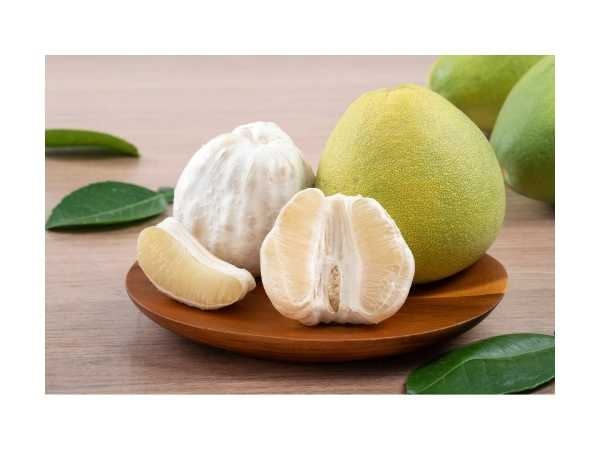

Citrus maxima 'Bablimas'
Common Names: Bablimas Pomelo, Indonesian Pomelo, Jeruk Bali
Local Name: Jeruk Bali Bablimas (Indonesian), Pambalimasu (Tamil)
Family: Rutaceae
Origin: Indonesia (selected cultivar from Java/Bali region)
Plant Type: Perennial evergreen tree
Variety: Bablimas — Indonesian selection with large fruit, sweet pink flesh, and low acidity
Average Lifespan: 30–50+ years
| Growth Habit | Medium to large evergreen tree with spreading, rounded canopy |
| Plant Size | 5–12 meters tall; canopy spread 5–8 meters |
| Leaves | Alternate, large ovate, 10–20 cm, dark green, with winged petioles characteristic of pomelo |
| Flowers | Large, white, fragrant, 3–5 cm diameter; borne singly or in small clusters |
| Flower Characteristics | Highly fragrant; larger than most citrus flowers; attracts bees and butterflies |
| Fruit | Very large, 15–25 cm diameter, 1–2 kg; thick rind; sweet pink to red flesh with low bitterness |
| Fruit Color | Pale green to yellow rind; pink to reddish-pink juicy segments inside |
| Seed Characteristics | Large, white, monoembryonic seeds; some fruits may be low-seeded |
| Root System | Moderately deep taproot with lateral roots; depends on rootstock |
| Climate | Tropical; warm and humid; thrives in equatorial conditions |
| Temperature Range | 25–35°C ideal; frost-sensitive; tolerates tropical heat well |
| Rainfall Requirement | 1500–2500 mm annually; well-distributed |
| Soil Type | Well-drained loamy to clay loam; rich in organic matter |
| Soil pH Preference | 5.5–6.5 |
| Sun Requirement | Full sun (6–8 hours daily) |
| Spacing | 6–8 meters between trees |
| Irrigation Method | Drip or basin irrigation; consistent moisture during fruit development |
| Water Requirement | Moderate to high; avoid waterlogging |
| Can it Grow in Pots? | Young trees in very large containers (60+ liters); will limit fruit size |
| Fertilizer Schedule | 3–4 times per year; citrus-specific NPK with micronutrients |
| Recommended Organic Fertilizers | Compost, vermicompost, fish emulsion, bone meal, seaweed extract |
| Pesticide Frequency | Monitor monthly; treat as needed |
| Recommended Organic Pesticides | Neem oil, horticultural oil, insecticidal soap |
| Mulching Practice | Organic mulch (5–8 cm); keep away from trunk |
| Training System | Open center or modified central leader |
| Pruning Time | After harvest; light annual pruning |
| How to Prune | Remove dead wood, water sprouts; shape for light penetration; minimal pruning needed |
| Common Pests | Citrus leaf miner, aphids, scale insects, citrus psyllid, fruit fly |
| Common Diseases | Citrus canker, greening (HLB), root rot, melanose, gummosis |
| Disease Prevention & Remedies | Disease-free nursery stock, copper sprays, good drainage, vector control for HLB |
| Flowering Months | Year-round in tropics; main flush during dry-to-wet transition |
| Fruiting Season | 6–7 months after flowering; available most of the year |
| Days to Harvest | 180–210 days from flowering |
| Harvest Indicators | Rind turns pale yellow-green, fruit feels heavy, slight give when pressed, aromatic |
| Average Yield per Plant | 50–150 fruits per tree per year (mature) |
| Pollination Type | Self-pollination and cross-pollination |
| Pollination Notes | Self-fertile; cross-pollination may increase seed count; bees are primary pollinators |
| Pollination Details | Self-fertile; insect-pollinated; large fragrant flowers attract pollinators |
| Propagation by Seeds | Seeds germinate in 2–4 weeks; seedlings take 5–8 years to fruit; variable quality |
| Propagation by Cuttings | Air layering possible; moderate success rate |
| Propagation by Grafting | T-budding or cleft grafting on rough lemon or Rangpur lime rootstock |
| Water Usage | Moderate; efficient with drip irrigation |
| Soil Conservation Practices | Evergreen canopy provides cover; mulching prevents erosion |
| Organic Practices Used | Composting, biological pest control, cover cropping |
| Companion Plants | Leguminous cover crops, lemongrass, chili peppers |
| Biodiversity Benefits | Large fragrant flowers attract diverse pollinators |
| Commercial Production Regions | Indonesia (Java, Bali, Sumatra), Thailand, China, Vietnam, India |
| Market Uses | Fresh fruit, festive/ceremonial fruit, juice |
| Processing Uses | Juice, marmalade, candied peel, essential oil from rind |
| Market Value (Approx.) | ₹100–300 per fruit; premium for Bablimas variety |
| Symbolism | Pomelo symbolizes prosperity and good fortune in Southeast Asian cultures; used in Chinese New Year |
| Traditional Uses | Rind used in traditional medicine; fruit offered in temples; peel used as natural cleanser |
| Calories | 38 kcal per 100g |
| Dietary Fiber | 1.0 g per 100g |
| Vitamin C | 61 mg per 100g (102% DV) |
| Vitamin A | Trace amounts; pink varieties contain lycopene |
| Iron | 0.11 mg per 100g |
| Potassium | 216 mg per 100g |
| Antioxidants | Naringin, lycopene (pink flesh), flavonoids, limonoids |
| Other Key Nutrients | Thiamine, riboflavin, niacin, copper, phosphorus |
| Anxiety & Sleep | Pomelo peel aroma used in aromatherapy for relaxation |
| Immune Support | Very high vitamin C content boosts immune function |
| Anti-inflammatory Properties | Naringin and flavonoids show anti-inflammatory effects |
| Heart Health | Potassium and fiber support cardiovascular health; naringin may lower cholesterol |
| Digestive Health | Fiber aids digestion; traditionally used to relieve bloating |
Disclaimer: Information provided is for educational purposes only and not a substitute for medical advice.
Add your field observations here.